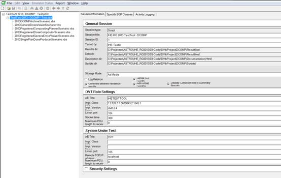
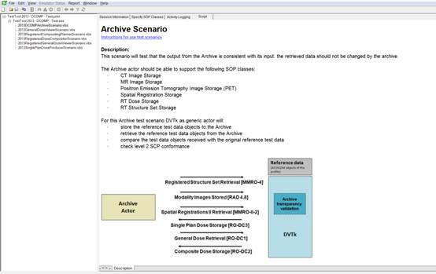

Instruction for use test scenarios
This
document describes how to run test scenarios using the DVTk based IHE-RO
TestTool 2013 DCOMP.
Start the
IHE-RO test tool by clicking the “TestTool
2013 - DCOMP” shortcut.
Configuration
First the
testtool needs to be configured, starting with the connection details. The
actor under test network settings need to be configured. Select the ‘Session
Information’ tab and configure the actor under test AE title, ip-address and
port number. Make sure that the IHE test tool AE title and port is correctly
configured at the actor side as well.

Running a scenario
The DVT
application has 2 panes. Initially the test scenarios are not shown in the left
pane. The test scenarios can be made visible by clicking on the “+” sign left
from the text “TestTool 2013 - DCOMP.ses”.
Selecting
one of the available test scenarios will show the overview of that particular
test scenario in the right pane.
The test scenario
will start executing by double clicking on the test scenario name in the left
pane (e.g. double click on the text 2013DCOMPArchiveScenario.vbs in the left
pane)

When a test
scenario starts executing a pop up window will appear showing the activity
logging. See example below.

Testscenarios
send transactions to the actor under test and expect to receive transactions
from the actor under test. A testscenario will first send all transactions
belonging to the scenario. After sending it will wait for incoming transactions
form the actor under test. While the test tool is listening a dialog will be
shown as can be seen below.

When all
transactions have been sent to the test tool
the user can continue on with the validation of all received
transactions by closing the dialog. The dialog can be closed by clicking the
‘Stop listening and start validation’ button. All received scenario
transactions are validated against the IHE-RO RT objects profile requirements.
The results will be shown in the test tools main window.
Test Results
The result
files of all tested scenarios are located at “<Instalation dir>\IHE-RO
Testtools DCOMP 2013\TestScenarios\Resultfiles”.